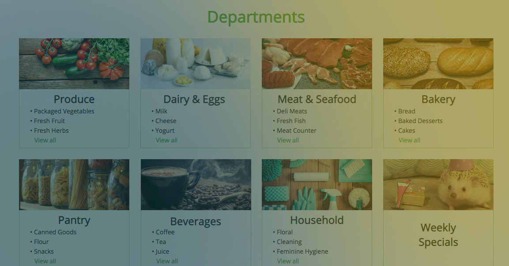

Save-On Foods
WHEN:
August 2018 - November 2018
WHAT:
Semester-Long Project in HCI Methodologies Course
WHERE:
University of British Columbia, BC, Canada
TOOLS:
August 2018 - November 2018
WHAT:
Semester-Long Project in HCI Methodologies Course
WHERE:
University of British Columbia, BC, Canada
TOOLS:
- Task-Centered Design
- Cognitive Walkthrough
- Think-Aloud Observation
- Retrospective Questionnaire
- Usability Testing
- Paper Prototyping
- Axure
This was a 3-month long project that assessed usability issues within the currently existing Save-On Foods Grocery interface, to we which developed design approaches to improve the customer search experience.
The project served to model the pre-design, early, and mid-design phases, in which we:
Special thanks to my awesome team!
Ho Yi Kwan, Jiasheng Ni, Mikayla Preete, Natasha Miner, and Ye Ji An
The project served to model the pre-design, early, and mid-design phases, in which we:
- (a) identified key tasks,
- (b) assessed issues to do with those tasks,
- (c) built conceptual models, requirements, and paper prototypes, and,
- (d) produced a mid-fi prototype through which we conducted a usability study.
Special thanks to my awesome team!
Ho Yi Kwan, Jiasheng Ni, Mikayla Preete, Natasha Miner, and Ye Ji An
August 2018
Evaluation Phase
Conducted a pre-design evaluation study on 12 UBC students to assess the ease and efficiency to which they can find a series of items using the pre-existing interface. The task utilized a think-aloud protocol, and was followed by a retrospective questionnaire.
Results revealed that users generally found the interface easy to use, but there were findability and learnability issues when utilizing the drop-down sorting and refine features. Additionally, users found the departments tab cluttered, and difficult to navigate through.
Results revealed that users generally found the interface easy to use, but there were findability and learnability issues when utilizing the drop-down sorting and refine features. Additionally, users found the departments tab cluttered, and difficult to navigate through.
August 2018
Task Examples & Requirements Analysis
We generated two task examples - one focused on a habitual user searching for items by brand, quantity and cost constraints. The second described a non-frequent user quickly searching for the cheapest item that would yield the most Save-On points.
Requirements were also solidified, and ordered by priority. For example, the following were requirements that needed to be addressed in future iterations were:
(a) A user should be able to efficiently search for the cheapest version of an item within 1 minute.
(b) The different methods available to search for items should be easy to learn and find.
Requirements were also solidified, and ordered by priority. For example, the following were requirements that needed to be addressed in future iterations were:
(a) A user should be able to efficiently search for the cheapest version of an item within 1 minute.
(b) The different methods available to search for items should be easy to learn and find.
October 2018
Conceptual Design & Paper Prototyping
When brainstorming the conceptual design, we wanted to incorporate something analogous to a grocery list, in which users would be able to add/remove items to a list, and have the ability to create multiple lists reflective of different needs (i.e recipes, weekly groceries). We also wanted to mimic the in-store experience for shoppers, in which department categories would be reflective of the categories physically seen in the grocery store, which would help users navigate the interface through a positive transfer effect.
Two paper prototypes were generated, one focusing on a "favorites list", to which users could create a new list, and add items to it. The second, involving "department modules", aimed to improve the different categories shown on the homescreen by having separate modules for each department. Each module could expand to list all sub-categories found in that department as well.
Two paper prototypes were generated, one focusing on a "favorites list", to which users could create a new list, and add items to it. The second, involving "department modules", aimed to improve the different categories shown on the homescreen by having separate modules for each department. Each module could expand to list all sub-categories found in that department as well.
>> Paper Prototyping Video <<
October 2018
Cognitive Walkthrough
Cognitive walkthroughs were performed on both prototypes. For the "favorites list" prototype, some pros included clear feedback when adding an item, but suffered from unclear signifiers on how to close/open a tabbed list. For the "department modules" prototype, advantages included a minimalist yet informative design, yet the modules had a long chain of sub-categories that may be confusing to navigate through.
November 2018
Med-fi Prototype & Usability Study
A medium fidelity, vertically-scoped prototype was created using Axure, it incorporating elements from both of the paper prototypes.
A usability study on 6 UBC students was then conducted using this med-fi prototype, in which participants were instructed to search for a product only using categories and filtering functionality. Afterwards, subjects also needed to create a new list, and add the specified product to it. The first search task was also performed on the original interface, to serve as comparison. Think-aloud observations were used for this study, along with a retrospective questionnaire.
A usability study on 6 UBC students was then conducted using this med-fi prototype, in which participants were instructed to search for a product only using categories and filtering functionality. Afterwards, subjects also needed to create a new list, and add the specified product to it. The first search task was also performed on the original interface, to serve as comparison. Think-aloud observations were used for this study, along with a retrospective questionnaire.
>> Medium-Fidelity Prototype Demo <<

Findings
The greatest strength within our prototype design was that we reduced the overall cluttered feel from the original interface, and the addition of the list functionality did not hinder our goal to create a cohesive, organized look. This is evidenced by: (a) user responses stating that they preferred the prototypical interface since it was simpler and had improved organization, and (b) user responses appreciating how the tabbed design of the list functionality did not obscure the main view of the page. In general, our design approach to streamline the presentation of department information, along with the addition of the lists, were well received.
However, users greatly desired a drag-and-drop functionality as the interface seems to afford such an action, and almost all participants voiced their desire to have such a feature. Of second precedence is to ensure that signifiers for “adding to cart” and “adding to list” are made clear, given that their actions are both similar, and confused a few participants in our study.